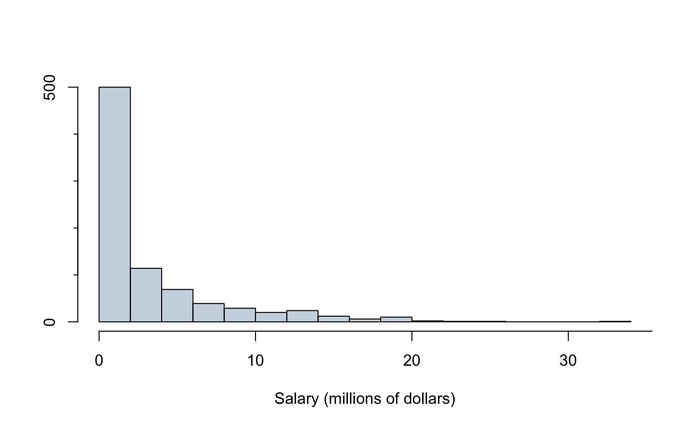
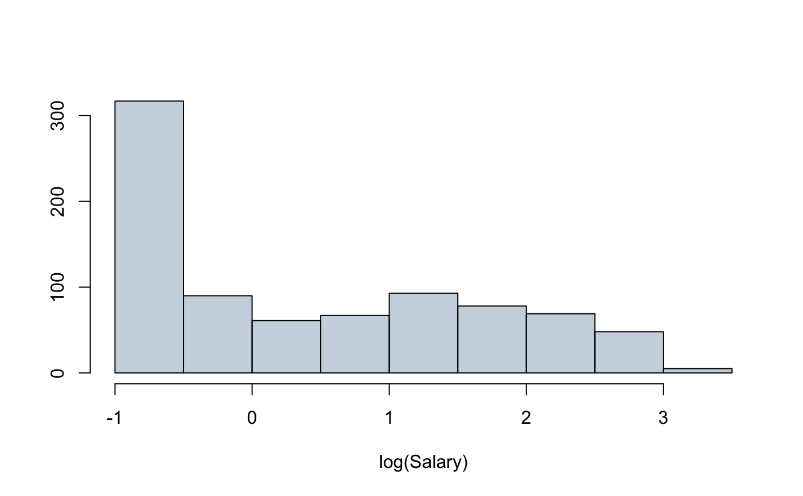

mlb.RdSalary data for Major League Baseball players in the year 2010.
mlb
A tibble with 828 observations on the following 4 variables.
Team
Field position
Salary (in $1000s)
Collected from the following page (and its linked pages) on February 23rd, 2011:
http://content.usatoday.com/sportsdata/baseball/mlb/salaries/team
# _____ Basic Histogram _____ # hist(mlb$salary / 1000, breaks = 15, main = "", xlab = "Salary (millions of dollars)", ylab = "", axes = FALSE, col = "#22558844")# _____ Histogram on Log Scale _____ # hist(log(mlb$salary / 1000), breaks=15, main = "", xlab = "log(Salary)", ylab = "", axes = FALSE, col = "#22558844")# _____ Box plot of log(salary) against position _____ # par(las = 1, mar = c(4, 8, 1, 1)) boxPlot(log(mlb$salary / 1000), mlb$position, horiz = TRUE, ylab = "")